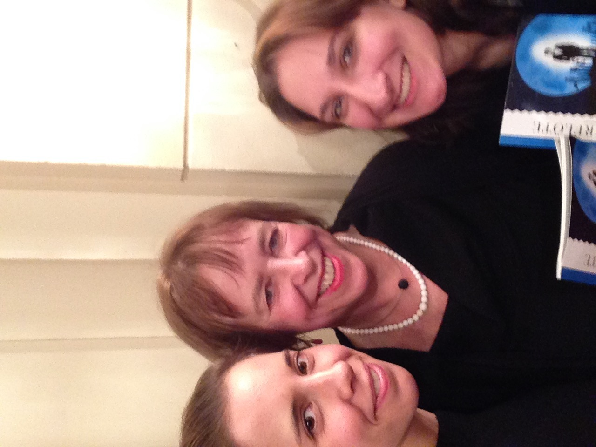

I’m a bit of a cocky person. So when I learned that I’d be living with a German host family in Berlin, I thought “psssh, this’ll be no problem, they’ll think I’m practically fluent with my many years of learning German!” This was not the case. Sure, I can blame the first few nights on jet lag. But honestly, living with two Germans who spoke very little English was a big wake up call to me that I’m not fluent; I still have a lot to learn.
One of the things that I strongly appreciated about this program was that the directors and student coordinators really took care of you. On the application, you would write down what kind of host family you wanted to live with; people you would feel comfortable with. One student in my group, Faith, was vegetarian. When she applied, she made sure that her host family would be able to offer meals without meat. For me, I grew up an only child. The thought of having several host siblings running around a house speaking fast and loud German was stressful enough. I ended up with a middle aged couple that didn’t speak too much English.
I saw this as my perfect opportunity to practise my German conversation skills in a calmer setting; my host father offered me a beer at dinner every night, and often times, if I didn’t have plans for the evening, my host mom and I would talk for hours on end.
Other than speaking with a host family in another language, there was getting used to a new home with its own rules to and routine to follow. I lived in Charlottenburg, which is a pretty wealthy area in Berlin. The building where the apartment was located was built in the early 20th century, before World War 1. As a result, there were still some traditional elements of the house.
But let’s talk about the shower for a moment. The entire four months of my life in Germany were only unpleasant when I had to shower. Why? Because water is expensive and precious in Germany. When you shower there, you turn on the water, get wet, and turn it off. Add soap and lather yourself, turn water on, rinse, and turn the water off. Yes, you do get cold in between water usage. Not a very pleasant way to wake up at 7 in the morning. On the bright side, it really woke you up for the day. And while we’re talking about the bathroom, let’s not forget that Germans don’t use fans. Crack open that window to let air flow, and get an even extra chill on your nude body while showering. Guten morgen!
Home Getting Around